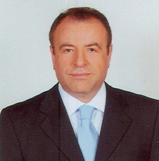

Kendini, kendinden sonra gelecek kişi ve kişiler ile, çalışanlarını eğiterek geliştirecek, mevcut potansiyelini yükseltecek kişi ve kurumlara yardımcı olabilecek biriyim.
YTÜ Makine Mühendisliği bölümünden Makine Yüksek Mühendisi diplomasına sahibim.

Sabancı Holding ve şirketlerinde (Lassa/Brisa A.Ş.; Kordsa Global A.Ş.’nin yurt içi ve yurt dışı şirketlerinde; Beksa A.Ş.; Toyotasa A.Ş. ve Temsa Global A.Ş.’nin yurt içi ve yurt dışı şirketlerinde); Çelik Halat A.Ş. ve Dilek Gayrimenkul A.Ş.’lerinde üst yönetici ve yönetim kurulu üyesi olarak çalıştım.
37 yıllık sanayi ve ticaret şirketleri yönetim deneyimi ile donanımlıyım.
Misyonum;
Kişi ve kurumlara, 37 yıllık kariyer ve iş yaşamımda edindiğim tüm deneyimlerimi, evrensel etik ilke ve değerlere bağlı kalarak ve eğitim yol ve yöntemleri ile aktararak, onların gelecekteki iş ortamı ve yaşamına en iyi şekilde hazırlanmasına yardımcı olmaktır.